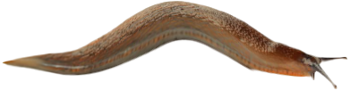

De 'slakkenplaag' van 2024
Feit of Fabel?
In de lente van 2024 klaagden veel mensen in Nederland over een "slakkenplaag" door de plotselinge toename van slakken in tuinen en op gewassen. Maar was het werkelijk een plaag, of slechts een tijdelijk gevolg van het natte weer?
Los het mysterie op

Hoe ben ik op het onderwerp gekomen?
Het thema voor deze opdracht was natuur, dus liep ik even naar buiten om wat inspiratie op te doen
Wat is de verdeling van de 300 verzamelde posts met #slakkenplaag over de jaren 2022, 2023 en 2024?
Ik heb 300 instagram posts verzameld om ze nu in stukken op te delen, en om te zien of er op basis van uploaddatum er inderdaad een verschil zit in het aantal slakkenplaag posts.
Zweef over de stukken om te weten wat het aantal van elk jaar is
Aha! Laten we verder gaanWat weten we nu?
- 🌠Uit de instagram berichten kunnen we speculeren dat er een vorm van een plaag was
- 🌠Uit de instagram berichten kunnen we zien dat het gaat om naaktslakken...
Maar wat voor naaktslak?
ARION VULGARIS
De meest voorkomende naaktslak die voor de ellende zorgde in de lente.
#slakkenplaag
Op Instagram heb ik gezocht op de hashtag #slakkenplaag om te zien welke resultaten er verschenen. De meeste posts gingen over de overlast die slakken veroorzaken, met name in de maand mei. Door op een bericht te klikken, kun je meer details bekijken, zoals reacties, likes en andere informatie.